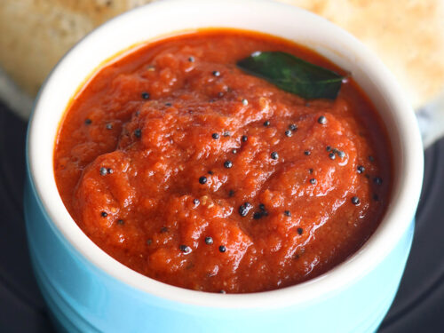

Tomato chutney

Description
Tomato Chutney is a tangy and tasty South Indian chutney made from tomatoes, herbs and spices. There are many variations of making tomato chutney aka thakkali chutney
Ingredients
- 1 kg Tomato sliced
- 500g red onion, finely sliced
- 4 garlic cloves, sliced
- 1 red chilli, chopped
- 4cm piece ginger, peeled and chopped
- 250g brown sugar
- 150ml red wine vinegar
- 5 cardamom seeds
- ½ tsp paprika
Steps
Steps 1
- Tip all the ingredients into a large heavy-based pan and bring to a gentle simmer, stirring frequently
- Simmer for 1 hr, then bring to a gentle boil so that the mixture turns dark, jammy and shiny
- Place into sterilised jars and allow to cool before covering. Will keep for 6 weeks